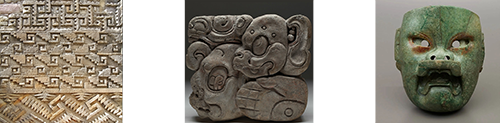

Home
Inspiration
Top Five
My name is Ernesto Hernandez
These are a few artists who inspire me
Paul Clipson
Paul Clipson’s experimental films, with their dynamic and abstract visuals,
rhythmic compositions, and intricate layering of textures, deeply resonate
with my passion for analog media.
Sassy 009
Music, especially the unique blend of dark and upbeat elements in Sassy 009’s
work, is my greatest inspiration, sparking creativity and excitement in my
design and artistic concepts.
Mesoamerican Art and Architecture

I am deeply inspired by the rich art and culture of Mesoamerican civilizations,
their intricate architecture, and their profound connection with nature,
which continues to resonate with me personally.